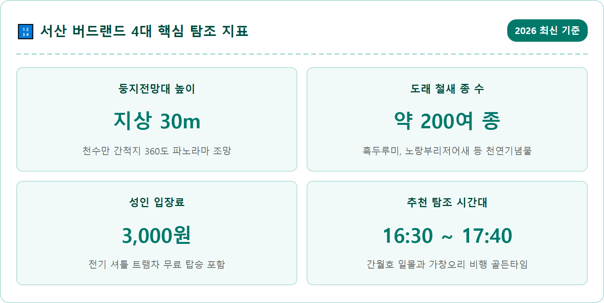
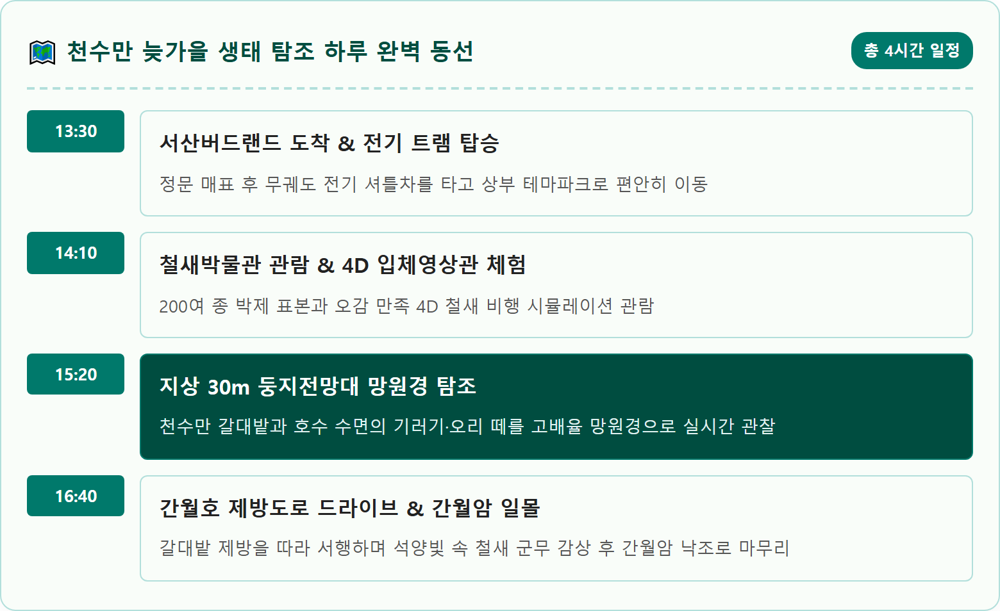
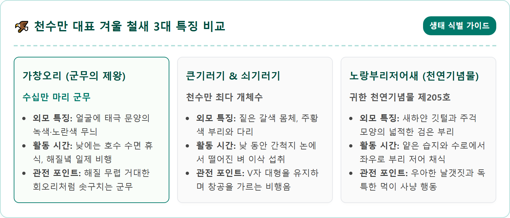
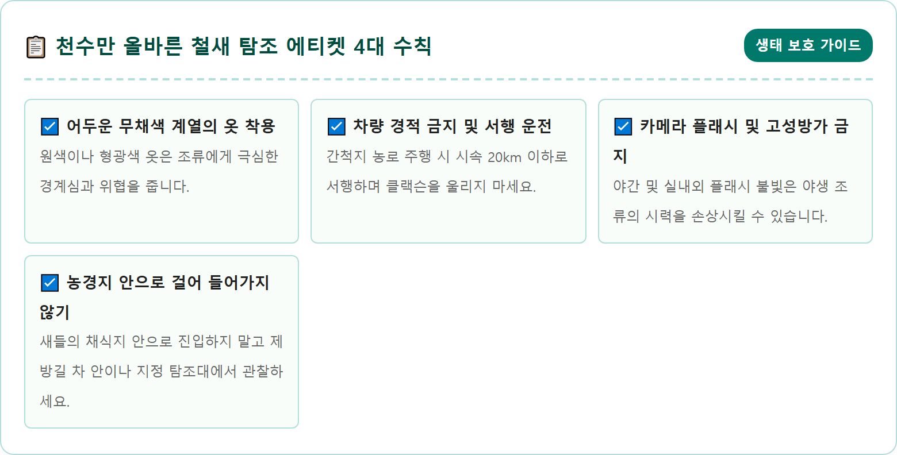
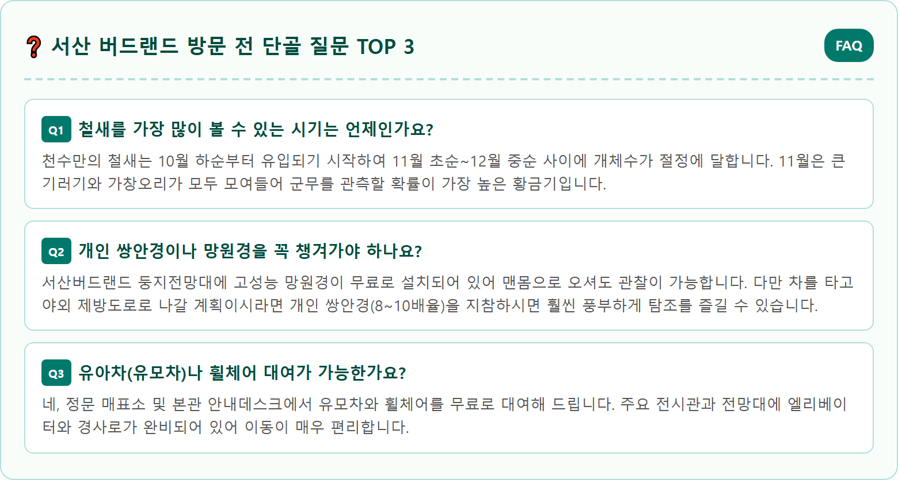

A grand wide-angle landscape photograph of Seosan Birdland and the vast Cheonsu Bay wetlands in Seosan, South Korea during late autumn sunset. In the foreground, the iconic modern wooden Nest Observatory (30-meter architectural tower shaped like a bird nest) stands on a hill surrounded by golden autumn reed grass. In the vast background, thousands of migratory wild birds like Baikal teals and bean geese fly in dynamic synchronized formations across a glowing orange and purple dusk sky. Calm reflection of the setting sun on Lake Ganweolho. Ultra-detailed, 8k resolution, cinematic wildlife and landscape photography, National Geographic style, authentic Korean natural wetland scenery.

충청남도 서산시 부석면 천수만로 일원에 자리 잡은 '천수만(淺水灣)'은 시베리아와 만주에서 출발한 겨울 철새들이 호주와 동남아시아로 이동하거나 한반도에서 겨울을 나기 위해 들르는 전 세계적인 핵심 철새 경유지입니다. 과거 대규모 간척 사업으로 조성된 간월호와 부남호, 그리고 드넓은 농경지는 수확 후 떨어진 낙곡과 풍부한 수중 생물 덕분에 수십만 마리의 물새들에게 풍요로운 월동 안식처를 제공하고 있습니다.
이 천수만의 생태적 가치를 보전하고 체계적으로 관찰하기 위해 건립된 거점이 바로 '서산 버드랜드(Seosan Birdland)'입니다. 약 24만㎡의 넓은 대지 위에 철새박물관, 둥지전망대, 4D 영상관, 야생조류치료센터, 미로숲 등을 갖춘 종합 생태 공원으로, 단순한 눈요기 관광을 넘어 자연과 인간이 공존하는 생명 존중의 가치를 피부로 배울 수 있는 명소입니다.
매년 10월 말부터 기온이 영하로 떨어지는 11월에 접어들면 천수만에는 큰기러기, 쇠기러기를 필두로 가창오리, 큰고니, 흑두루미, 노랑부리저어새 등 전 세계적인 멸종위기 야생생물과 천연기념물들이 떼를 지어 날아듭니다. 늦가을 서산 버드랜드 언덕에 서서 가을바람을 타고 유영하는 철새들의 힘찬 날갯짓을 바라보는 것은 일상에 지친 현대인에게 깊은 자연의 경외감을 선사합니다.

서산 버드랜드의 상징적인 건축물은 언덕 가장 높은 곳에 우뚝 솟아 있는 '둥지전망대'입니다. 높이 30m에 달하는 이 철골 타워는 새들이 나뭇가지를 엮어 둥지를 튼 모양새를 감각적인 현대 건축으로 형상화한 독특한 외관을 자랑합니다. 엘리베이터를 타고 4층 전망 라운지에 오르면 사방이 투명 통유리창으로 개방되어 천수만 전체가 시원하게 내려다보입니다.
전망대 내부에는 방문객 누구나 무료로 이용할 수 있는 고성능 광학 망원경이 수십 대 비치되어 있습니다. 망원경 렌즈에 눈을 대면 수 킬로미터 밖 간월호 모래톱에서 무리 지어 휴식을 취하는 큰기러기 떼의 깃털 무늬나, 물속에 부리를 넣고 좌우로 저으며 먹이를 찾는 노랑부리저어새의 독특한 주걱형 부리 모양까지 손에 잡힐 듯 생생하게 관찰됩니다.
전망대 야외 데크로 나가면 서해에서 불어오는 시원한 가을 갯바람과 함께 귓전을 울리는 기러기들의 우렁찬 울음소리가 입체 서라운드로 전해집니다. 가을빛으로 샛노랗게 물든 간척지 논과 황금빛 갈대숲, 잔잔한 은빛 호수가 어우러지는 파노라마는 둥지전망대에서만 만날 수 있는 독점적인 뷰포인트입니다.

둥지전망대를 둘러본 후에는 아래쪽 언덕에 위치한 본관 '철새박물관'과 '4D 영상관'으로 발걸음을 옮겨야 합니다. 철새박물관은 천수만에 서식하는 200여 종의 야생 조류를 실제 크기의 정교한 표본과 디오라마로 재현해 놓아 아이들의 호기심을 자극합니다. 터치스크린을 누르면 각 새들의 실제 울음소리를 들어볼 수 있고, 계절별 철새 이동 경로를 인터랙티브 지도를 통해 쉽게 학습할 수 있습니다.
서산 버드랜드의 최고 인기 코너는 단연 '4D 애니메이션 영상관'입니다. 입체 안경을 쓰고 특수 효과 의자에 앉으면, 주인공 철새가 시베리아에서 천수만까지 날아오는 험난한 여정을 실감 나게 그린 입체 영화가 상영됩니다. 바람이 뺨을 스치고 의자가 진동하며 물방울이 튀는 특수 효과 덕분에 관람객들은 마치 자신이 철새가 되어 하늘을 나는 듯한 짜릿한 몰입감을 경험하게 됩니다.
4D 영상관은 오전 10시부터 오후 5시까지 30분~1시간 간격으로 상영되며, 관람 요금은 성인 2,000원, 청소년 및 어린이 1,000원의 저렴한 비용으로 운영됩니다. 주말에는 회차별 조기 매진이 잦으므로 버드랜드에 도착하자마자 현장 매표소에서 4D 영상 상영 시간표를 확인하고 티켓을 먼저 확보하시는 것이 좋습니다.
서산 버드랜드는 동절기(11월~2월) 기준 오전 10시부터 오후 5시까지 운영되며, 입장 마감은 관람 종료 1시간 전인 오후 4시입니다. 매주 월요일은 정기 휴관일이지만, 월요일이 공휴일인 경우에는 정상 운영 후 다음 날 휴관합니다.
2026년 기준 입장료는 일반 성인 3,000원, 청소년 및 군인 2,000원, 어린이(만 12세 이하) 1,500원이며, 만 6세 이하 영유아와 만 65세 이상 경로우대자는 무료입장이 적용됩니다. 서산시민의 경우 신분증 제시 시 50%의 파격적인 감면 혜택을 받을 수 있습니다.
주차장에 차를 대고 매표소를 통과하면 언덕 위의 생태체험관까지 걸어 올라갈 수도 있지만, 매표소 앞에서 수시로 출발하는 무궤도 친환경 전기 트램차(전기버스)를 이용하시는 것이 훨씬 편리합니다. 무료로 탑승할 수 있으며, 완만한 오르막길을 약 5분간 천천히 달리며 창밖의 가을 들판과 숲속 조형물을 감상하는 즐거움을 줍니다.

서산 버드랜드 내부 시설을 모두 둘러보았다면, 이제 차를 타고 광활한 천수만 간척지 제방길로 직접 나가 야생 그대로의 철새들을 마주할 차례입니다. 버드랜드 정문에서 나와 간월호 서측 제방도로를 따라 남쪽으로 내려가는 약 10km 구간은 서해안 최고의 생태 드라이브 코스입니다.
차창 밖으로는 끝없이 펼쳐진 황금빛 들판과 사람 키보다 훌쩍 큰 은빛 갈대숲이 바람에 일렁입니다. 추수가 끝난 논바닥마다 수천 마리의 큰기러기 떼가 옹기종기 모여 앉아 먹이 활동을 하는 모습을 불과 수십 미터 거리에서 관찰할 수 있습니다. 이때 주의할 점은 차에서 문을 열고 내리거나 큰 소리를 내면 예민한 기러기들이 일제히 날아올라 체력을 낭비하게 되므로, 차 시동을 끄고 차창만 살짝 내린 채 차 안에서 조용히 관찰하는 '카 사파리(Car Safari)' 방식을 취하는 것입니다.
제방길 중간중간에는 철새를 방해하지 않도록 가림막이 설치된 목재 '수변 탐조대'가 마련되어 있습니다. 이곳에 차를 대고 탐조대 관측 구멍을 통해 망원경을 내밀면, 물가에서 유유히 헤엄치는 오리 떼와 백로, 고니들의 평화로운 일상을 가장 자연스러운 눈높이에서 만날 수 있습니다.
천수만 탐조 여행의 백미는 해가 지는 일몰 무렵(오후 5시 전후)에 펼쳐지는 가창오리들의 환상적인 군무(群舞)입니다. 낮 동안 호수 한가운데 빽빽하게 모여 잠을 자던 수만, 수십만 마리의 가창오리들은 태양이 붉은 노을을 토해내며 서쪽 지평선 너머로 기울기 시작하면 일제히 잠에서 깨어납니다.
처음에는 한두 무리가 정찰하듯 호수 위를 선회하다가, 신호라도 내린 듯 수십만 마리의 오리 떼가 일제히 하늘로 박차고 날아오릅니다. 거대한 먹구름이 솟구쳐 오르듯 하늘을 뒤덮은 철새 무리는 하나의 거대한 유기체처럼 뭉쳤다 흩어지기를 반복하며 허공에 거대한 파도와 회오리, 기하학적 곡선을 그려냅니다.
일몰의 붉은 노을빛을 배경으로 펼쳐지는 이 장엄한 공중 퍼포먼스는 자연이 빚어낸 그 어떤 멀티미디어 쇼보다도 웅장하고 감동적입니다. 수십만 개의 날갯짓이 공기를 가르며 만들어내는 거대한 바람 소리는 현장에 있는 사람들의 심장을 고동치게 만듭니다. 이 마법 같은 순간을 포착하려면 최소 일몰 40분 전에는 간월호 제방도로에 자리를 잡고 대기하셔야 합니다.
야생 동물과의 만남에서 가장 중요한 원칙은 그들의 삶의 터전을 침범하거나 위협하지 않는 '생태적 배려'입니다. 특히 수천 킬로미터를 날아와 지친 몸으로 겨울을 나는 철새들에게 인간의 부주의한 행동은 생존을 위협하는 치명적인 스트레스가 될 수 있습니다.
탐조를 나설 때는 가급적 원색의 화려한 등산복보다는 카키색, 베이지색, 갈색 등 주변 자연환경과 어우러지는 어두운 무채색 옷을 입어야 합니다. 새들은 시각이 매우 발달하여 붉은색이나 형광색 옷을 보면 천적으로 인식하고 즉시 달아납니다.
또한 사진 촬영 시 플래시(스트로보) 사용은 야생 조류의 시신경을 일시적으로 마비시켜 비행 중 충돌 사고를 유발할 수 있으므로 절대 금기 사항입니다. 멋진 사진을 건지겠다고 새들을 일부러 날리기 위해 손뼉을 치거나 돌을 던지는 행위는 법적으로 엄격히 금지된 불법 행위입니다. 자연에 잠시 초대받은 손님의 마음으로 숨을 죽이고 조용히 지켜볼 때, 새들은 가장 아름다운 모습을 우리에게 보여줍니다.

서산 버드랜드는 대규모 가족 단위 나들이객을 수용할 수 있도록 널찍한 무료 주차장을 완비하고 있습니다. 승용차 수백 대와 대형 관광버스를 여유롭게 댈 수 있으며, 전기차 충전소도 갖추어져 있어 장거리 운전 후 충전하기에 편리합니다.
정문 매표소에는 유아를 동반한 부모님과 어르신을 위한 유모차 및 휠체어 무료 대여 서비스가 운영되고 있으며, 수유실과 기저귀 교환대 등 편의시설이 청결하게 관리되고 있습니다. 전시관 주변 야외 잔디마당에는 목재 테이블과 벤치가 넉넉하게 설치된 피크닉 쉼터가 있어, 맑은 가을 햇살 아래 집에서 싸 온 도시락을 즐기기에 더없이 좋습니다.
또한 둥지전망대 1층에는 따뜻한 차와 음료, 간단한 베이커리를 판매하는 전망 카페가 자리 잡고 있어 탐조 중간에 몸을 녹이며 가을 호수를 바라보며 여유로운 티타임을 가질 수 있습니다.
서산 버드랜드에서 경이로운 생태 탐방을 마쳤다면, 차량으로 불과 5~10분 거리에 있는 서해안의 보석 같은 명소 '간월암(看月庵)'과 간월도 맛집 골목으로 발걸음을 이어가시길 권합니다.
간월암은 조선 태조 이성계의 왕사였던 무학대사가 달을 보며 깨달음을 얻었다 하여 이름 붙여진 작은 암자입니다. 하루 두 번 밀물이 들어오면 바다 위에 외롭게 떠 있는 섬이 되고, 썰물이 되면 걸어서 들어갈 수 있는 신비로운 바닷길이 열립니다. 특히 해질 무렵 바다 위에 붉게 물드는 간월암 낙조는 서산 9경 중 하나로 손꼽히는 절경입니다.
낙조를 감상한 뒤에는 간월도의 대표 별미인 '서산 영양굴밥'과 '어리굴젓'을 맛보셔야 합니다. 갓 지은 무쇠솥에 살이 통통하게 오른 서산 갯벌 자연산 굴과 은행, 밤, 대추를 듬뿍 넣고 지어낸 영양굴밥에 달래간장을 쓱쓱 비벼 김에 싸 먹으면, 짭조름한 바다 향과 고소함이 입안 가득 번져나갑니다. 매콤달콤하게 삭힌 어리굴젓을 밥 위에 얹어 먹는 한입은 서산 가을 여행의 완벽한 피날레가 되어줄 것입니다.
| 구분 | 상세 정보 | 이용 팁 |
|---|---|---|
| 위치 | 충청남도 서산시 부석면 천수만로 655-73 (서산버드랜드) | 내비게이션: 서산버드랜드 검색 (대형 무료 주차장) |
| 운영 시간 | 10:00 ~ 17:00 (입장 마감 16:00 / 매주 월요일 휴관) | 전기 트램차 무료 운행 (매표소 ↔ 생태관) |
| 관람 요금 | 성인 3,000원 / 청소년 2,000원 / 어린이 1,500원 | 4D 영상관 관람료 별도 (성인 2,000원 / 조기 예매 권장) |
| 주요 볼거리 | 30m 둥지전망대, 철새박물관, 간월호 갈대 제방도로 | 오후 4시 30분 이후 간월호 일몰 가창오리 군무 관측 추천 |